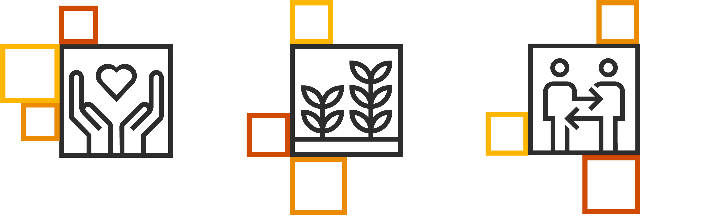
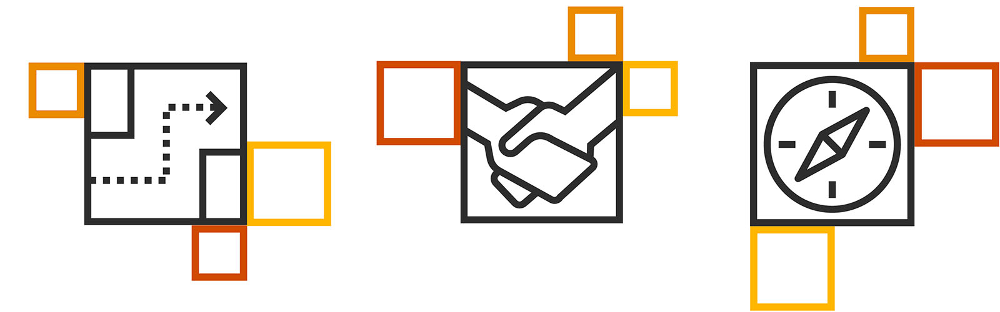
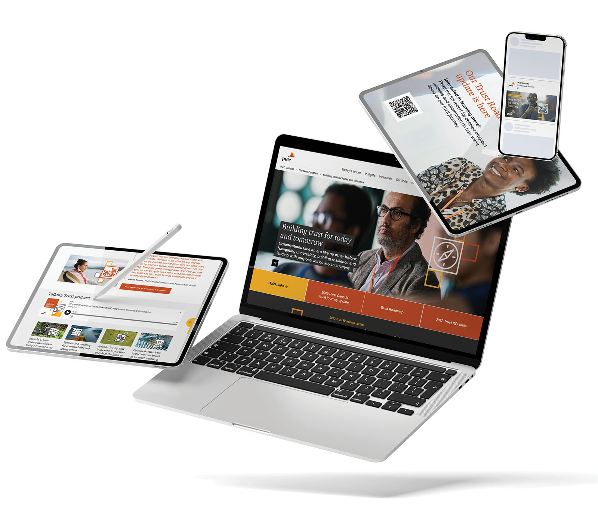

Building trust through transparency
Evolving creative strategy for Canada’s first comprehensive accountability campaign in professional services
The challenge
Accountability as a brand strategy
Some creative briefs ask you to make something beautiful. This one asked something harder: make something honest. The Trust Roadmap was PwC Canada’s public commitment to measuring and reporting its own progress on ESG, DEI, Indigenous reconciliation and pay equity—the first initiative of its kind in Canada’s Big 4. My role was to take that commitment and turn it into a creative system that could carry difficult truths and genuine progress with equal credibility, year after year, across every channel where stakeholders would encounter it.
The brief: Position PwC Canada as a leader in transparency by publicly reporting progress across ESG, DEI, Indigenous reconciliation, pay equity and operational accountability—creating market differentiation while supporting new consulting practices in trust and sustainability.
Timeline: FY22–FY24 (annual delivery cycle, March–June each year)
Key constraints: First-of-its-kind initiative with no industry precedent; balancing transparency with organizational sensitivity; annual delivery cycle with compressed timelines; complex stakeholder approval processes across Editorial, Creative, Digital and practice leadership teams.
Strategic approach
In-house ownership with a scalable creative system
The first Trust Roadmap had been outsourced and the result was a website that sat outside PwC’s domain architecture, carried brand compliance risks and cost significantly more than our internal capabilities could deliver. Working with my Digital Lead and Studio leadership, I made the case to bring it in-house: more flexible, more brand-compliant, more accessible and substantially faster to produce—while keeping sensitive data and stakeholder conversations internal where they belonged. That proposal was approved and became the foundation for everything that followed.
The creative architecture
- Pixel-based visual system: Aligned with PwC’s global ‘The New Equation’ positioning—building on global brand equity while preserving flexibility to tell local stories.
- Photography: Warm, specific and human—community partnership, workplace inclusion and environmental stewardship rather than generic corporate stock.
- Modular flexibility: The system worked across digital, social, print and video, maintaining a consistent brand experience while allowing content to flex year over year.
Core orange, yellow and tangerine supporting, plus neutrals
Getty stock imagery — inclusive, collaborative, authentic
Aligned with global ‘The New Equation’ positioning, adapted for local


Process innovation for improved outcomes: Wireframe approvals
Previously, stakeholders would approve copy and then request structural changes once they saw content in final layouts, creating costly rework cycles across three teams. Introducing wireframe approvals moved structural and editorial decisions upstream, before any design work began. Stakeholders could see how content would sit in context and make adjustments early, allowing design and production decisions to be based on final copy. By making this simple process swap, the entire FY24 project was completed in half the time required for FY22.
Execution and delivery
Annual accountability across multiple channels
Delivering a multi-channel accountability campaign on a compressed annual timeline—with stakeholder approval chains running across Editorial, Creative, Digital and SMEs simultaneously—required the kind of creative leadership that designs the process as carefully as the product. A structured cross-functional delivery methodology kept everyone moving in the same direction, a wireframe approach kept approval cycles from expanding and a modular creative system meant that year-over-year iteration was efficient rather than a rebuild from scratch. Efficiency, consistency and accountability.
Bilingual and accessible delivery: All materials produced in English and French, as required by Quebec large-employer regulation and WCAG 2.0 Level AA compliant as required by the Accessibility for Ontarians with Disabilities Act. These requirements were built in from the first brief, not retrofitted at the end.
Data-driven iterative improvement: Each year incorporated lessons from the last—simplified creative approach informed by engagement data, UX improvements from CrazyEgg analysis and performance testing on programmatic ad formats, podcasts and paid social posts.
Two audiences, one story: The campaign carried two jobs simultaneously. Externally—through social, programmatic display, a Talking Trust podcast series and coordinated press—it built market differentiation on the strength of PwC Canada’s commitments. Internally, a messaging and story toolkit, digital signage, email signatures and presentation graphics turned the same narrative into an EVP asset: giving staff a shared language for what the firm stood for and why it mattered.

Impact and outcomes
First-of-its-kind accountability with measurable efficiency gains
Rigour and warmth aren’t opposites. The best accountability communications can deliver both.
What made this work
- Strategic in-sourcing: Recognizing that the vendor solution wasn’t serving the business and proposing an internal alternative that delivered better brand compliance, better accessibility and substantially lower cost.
- Process innovation: Wireframe approvals transformed how Editorial, Creative and Digital teams collaborated—moving structural decisions upstream and compressing the FY24 delivery timeline to half that of FY22. The approach was subsequently adopted across other campaign work at the firm.
- Honest creative direction: Building a visual system capable of carrying difficult truths alongside genuine progress, without the campaign tipping into self-congratulation—consistency of tone was as important as consistency of design.
- Sustained year-over-year ownership: Same framework, same standards, iterative improvement—the kind of stewardship that turns a one-time initiative into an organizational capability.